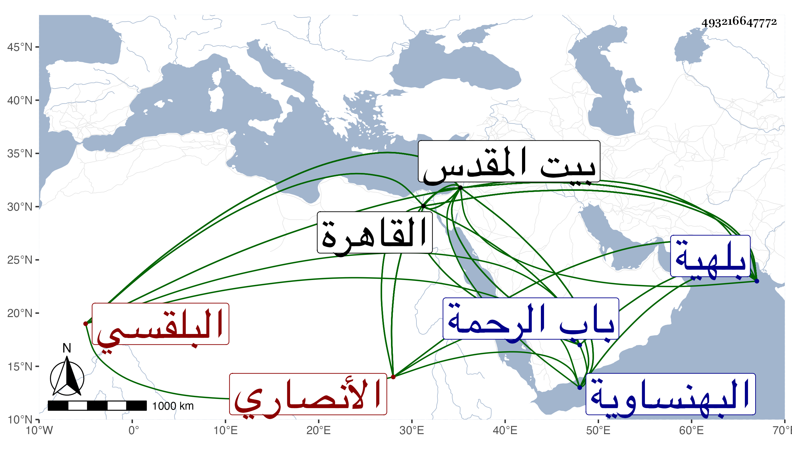

0902Sakhawi.DawLamic.ITO20230111-ara1.EIS1600.493216647772
Biography ID: 493216647772
820
ماهر بن عبد الله بن نجم بن عوض بن نصير بفتح النون ثم مهملة ككبير ابن نصار بالفتح والمهملة الثقيلة الزين أبو الجود الأنصاري البلقسي الأصل ثم البلهيائي نسبة إلى بلهية من بركة لواثة السفطي نسبة لسفط رشيد القاهري الشافعي نزيل بيت المقدس . ولد في سنة تسع وقيل أربع وسبعين وسبعمائة بقرية بلهية في بركة لواثا من البهنساوية من أعمال القاهرة ونشأ بها فحفظ القرآن عند جماعة ثم انتقل إلى القاهرة بعد موت والده في آخر سنة تسع وتسعين أو التي قبلها فحفظ الحاوي والشامل الصغير والثلث من التنبيه وتفقه بالأبناسي ونزل بزاويته ولازمه كثيرا وبالسراجين ابن الملقن والبلقيني والبدر القويسني وغيرهم ، وأجاز له الزين العراقي وغيره وانتقل إلى بيت المقدس في رجب سنة اثنتين وثمانمائة فلازم الشهاب بن الهائم في الفرائض والحساب وكذا في العربية والفقه وأصوله والمنطق بقراءته وقراءة غيره حتى حمل عنه علما جما وحضر أيضا عند الشمس القلقشندي وطائفة وبرع في العلم وتمكن في فنون خصوصا الحاوي وعرف باستقامة الفهم وسرعة التصور والتثبت في النقل وولي تصديرا بالمسجد الأقصى وتصدى للإقراء فانتفع به خلق منهم ابن حسان وعبد الكريم القلقشندي ومن دونهم أو مثلهم مع أن ميله كان في العبادة أكثر من الإقراء وصار شيخ البلد بدون مدافع لمتين ديانته ومزيد ورعه وتقشفه في مأكله ومشربه ومسكنه وسائر أحواله وتقنعه باليسير وانعزاله عن بني الدنيا بل وعن أكثر الناس إلا من يفيده وسلامة صدره ومزيد صمته وبشاشته وطلاقته ووفور عقله وحسن فطرته ومشيه على قانون السلف ممن جمع بين العلم والعمل والزهد ولم يكن يكتب على فتيا تورعا وما علمت بعد ابن رسلان بتلك النواحي مثله ولذا قال العز القدسي : لا أعلم ببيت المقدس وغيرها من يستحق الصلاحية بشرط الواقف سواه ، وكان الشهاب بن المحمرة كثيرا ما يقول : الصلاح عبارة عن اثنين صامت ومتكلم فشار ويشير إلى أن الصامت صاحب الترجمة ، وقد لقيته ببيت المقدس وانتفعت بدعائه ورؤيته وقرأت عليه جزءا . مات بعد أن اعتراه ضيق النفس مدة في يوم الأربعاء سابع عشر ربيع الأول أو قبيل العشاء من ليلة الأربعاء سلخ ربيع الآخر سنة ست وستين ودفن بمقبرة باب الرحمة شرقي المسجد الأقصى وكانت جنازته حافلة ولم يخلف بعده هناك في طبقته مثله رحمه الله ونفعنا به وقد أنشد البرهان العينوسي الكتبي به :
| ألا من كان يبغي نيل علم | فلا ينفك طول الليل ساهر |
| ومن يطلب عروس العلم تجلى | فإن الشيخ زين الدين ماهر |
وكتب الزين عبد الرحمن القرشي لغزا في ماهر وأرسل به إلى الهائم من غير أن يعلم مضمونه وقد أجاب عنه بعد دهر أبو اللطف بما لا أطبل بإيرادهما .
